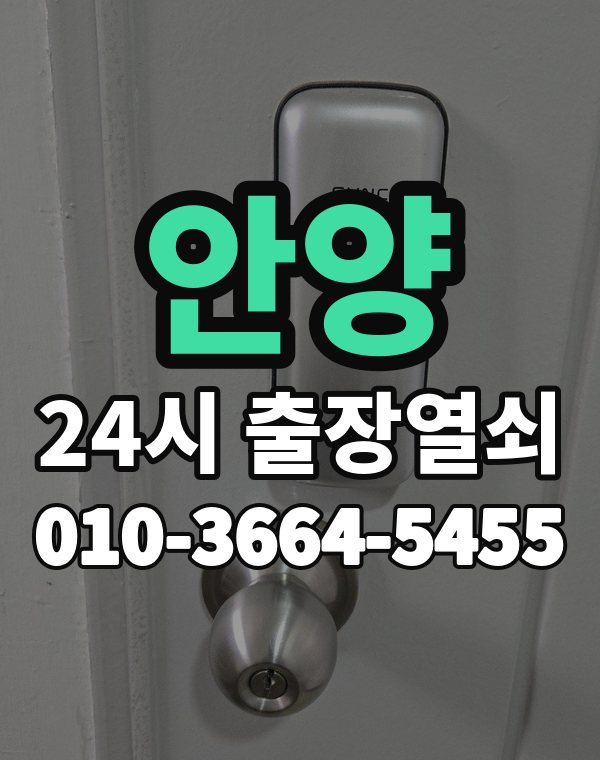

안양 출장 다니며 보는 동네
안양은 평촌 신도시 아파트와 만안구 안양동, 박달동 주택가가 나뉘어 있는 도시입니다.
평촌은 입주한 지 오래된 단지가 많아 교체 문의도 많습니다.

안양시 출장 가는 동네
- 평촌동
- 비산동
- 관양동
- 호계동
- 귀인동
- 부흥동
- 안양동
- 석수동
- 박달동
평촌동 출장열쇠, 비산동 열쇠집처럼 동네 이름으로 찾으셨어도 같은 곳입니다.
적혀 있지 않은 동네도 안양시 안이면 다 갑니다.
안양 출장 작업 종류
안양 출장 부르실 때
평촌 쪽은 단지와 동 번호를, 만안구 주택가는 건물 이름을 알려주세요.
범계 일대 상가 출입문도 출동합니다.
범계역, 평촌역, 안양역, 인덕원역 근처라고 말씀해 주셔도 위치 잡기가 쉬워집니다.
가까운 역이나 큰 건물, 단지 이름을 같이 알려주세요.
- 주소와 건물 이름 (아파트면 동, 호수)
- 문 종류, 번호판이 켜지는지
- 사시는 걸 확인할 신분증이나 우편물이 있는지
전화부터 작업까지 순서는 이용안내에 적어 두었습니다.
안양 출장열쇠 관련 글
- 안양 안양동 공동현관 비밀번호와 카드가 안 먹힐 때 세대 현관과 구분해 확인하는 법
- 안양 안양동 아이나 반려동물이 집 안에 있을 때 문이 잠겼다면 먼저 할 일
- 안양 안양동 단지 전체 정전 때 도어락이 안 열리면 세대별 대처법
- 안양 안양동 배달 일 하는 가족이 늦게 돌아와 문이 안 열릴 때
- 안양 안양동 현관문 도어클로저 속도가 너무 빠르거나 느릴 때 조절법
- 안양 안양동 아침 안개와 결로로 번호판이 젖어 도어락이 오작동할 때 대처법
- 안양 안양동 이사 후 이전 세입자 도어락 번호 남아 있는지 확인하는 법
- 안양 안양동 대문·철문·공동 출입문이 안 열리거나 안 잠길 때 확인할 것
- 안양 안양동 상가 유리문 하단 잠금장치가 안 열릴 때 출장열쇠 점검 순서
- 안양 안양동 손주가 오는 날을 위한 도어락 간단한 번호 정하기와 주의점
- 안양 안양동 문 열기 전 신분 확인은 왜 하나요, 출장열쇠 확인 절차 안내
- 안양 안양동 도어락 설치 전에 문 두께·보조키 확인하는 법과 출장열쇠 설치 순서
- 안양 안양동 오래된 문이 처져 현관문이 안 열리거나 안 닫힐 때
- 안양 안양동 도어락 앱 연동과 알림이 안 될 때 확인 순서
- 안양 안양동 여분 열쇠 보관 요령, 맡길 곳 고르는 기준
- 안양 안양동 봄 황사 미세먼지 철 도어락 번호판 둔할 때
- 안양 안양동 자취방·고시원·쉐어하우스 출입문이 안 열릴 때 출장열쇠 부르기 전 확인
- 안양 안양동 도어락 외출 모드 휴가 모드로 문이 안 열릴 때
- 안양 안양동 빌라 공동 현관 열쇠와 호수별 문이 따로 잠겼을 때 출장열쇠
- 안양 안양동 주말 공휴일 문이 안 열릴 때 출장열쇠 연락하는 요령
- 안양 안양동 와이파이 연동 도어락 오프라인 표시 원인과 출장열쇠 점검
- 안양 박달동 도어락 자동 잠김 시간 설정이 헷갈릴 때 확인할 순서
- 안양 박달동 미용실 네일숍 유리문 잠금장치가 안 열리거나 안 잠길 때
- 안양 박달동 도어락 카드키 태그 리모컨 분실했을 때 대처
- 안양 박달동 문이 잠겼을 때 경비실과 관리사무소 도움을 요청하는 요령
- 안양 박달동 아이나 반려동물이 집 안에 있는데 문이 잠겼을 때
- 안양 박달동 오래 쓴 실린더가 닳아 열쇠가 헛돌 때 출장열쇠 안내
- 안양 박달동 택배 받으러 나왔다가 문이 잠겼을 때 대처법
- 안양 박달동 현관 방범 점검 요령, 도어락과 문틀 이렇게 살펴보세요
- 안양 박달동 장마·겨울 결로로 도어락이 이상할 때 출장열쇠 부르기 전 확인
- 안양 박달동 도어락 건전지 알카라인과 리튬 중 무엇을 고를까, 고르는 기준 정리
- 안양 박달동 매립형 문 안쪽 부품 규격 맞추는 법, 도어락 교체 전 확인
- 안양 박달동 입주·퇴거 때 도어락 확인할 것, 번호와 열쇠 정리 순서
- 안양 박달동 방문·화장실 문이 안에서 잠겼을 때 당황하지 말고 이렇게 하세요
- 안양 박달동 룸메이트가 나간 뒤 도어락 비밀번호 정리하는 순서
- 안양 박달동 교대근무 새벽 귀가길 도어락 쓰는 요령과 문이 안 열릴 때
- 안양 박달동 셔터 옆 쪽문 열쇠 문제 출장열쇠로 해결하는 순서
- 안양 박달동 스마트폰 잃어버려 도어락 앱까지 못 쓸 때 문 여는 방법
- 안양 박달동 문틀 받음쇠 위치가 어긋나 걸쇠가 안 들어갈 때
- 안양 박달동 자취방 쉐어하우스 출입문 잠김, 공용 현관과 내 방 문 구분해서 대처하기
- 안양 박달동 분리수거장 쓰레기실 문 열쇠가 없거나 잠겼을 때 대처 방법
- 안양 박달동 빌라·다세대 현관과 공동 출입문이 잠겼을 때 대처법
- 안양 비산동 출장열쇠 부르기 전에 준비할 것, 사진·위치·상태 알려주는 법
- 안양 비산동 카페 오픈 시간에 맞춰 출입문이 안 열릴 때 출장열쇠
- 안양 비산동 교회·종교시설 출입문 열쇠 관리, 여러 사람이 드나드는 문을 정리하는 법
- 안양 비산동 신입생 자취방 첫 도어락 사용법과 문 안 열릴 때 대처
- 안양 비산동 현관문 아래가 바닥에 쓸릴 때 처짐 원인과 확인 순서
- 안양 비산동 현관문이 안 열릴 때 증상으로 원인 찾는 법과 출장 요청 순서
- 안양 비산동 비 맞은 뒤 도어락 번호판이 먹통일 때 대처법
- 안양 비산동 도어락 경고음 길게 짧게 울릴 때 소리별 뜻
- 안양 비산동 복층·투룸 방문까지 잠겼을 때 출장열쇠가 하는 순서
- 안양 비산동 부모님 집 도어락 점검과 어르신이 쓰기 편한 설정
- 안양 비산동 지문 인식 도어락이 자꾸 안 열릴 때 원인과 해결 순서
- 안양 비산동 손이 젖거나 건조할 때 도어락 지문이 안 읽히는 이유와 대처
- 안양 비산동 도어락 비밀번호가 기억 안 날 때 출장열쇠 부르는 순서
- 안양 비산동 열쇠가 안 돌아가고 안 빠질 때 억지로 돌리기 전에 볼 것
- 안양 비산동 김장 날 베란다 작업 중 문이 잠겼을 때 출장열쇠 부르기
- 안양 비산동 집주인 세입자 도어락 문제 생겼을 때 확인할 것
- 안양 비산동 원룸·오피스텔 출입문 잠겼을 때 출장열쇠 부르는 순서
- 안양 비산동 어르신이 눌러 쓰기 쉬운 도어락 번호판 사용법과 소리 설정
- 안양 비산동 주방 기름 연기로 현관 도어락이 끈적일 때 닦는 법과 점검
- 안양 비산동 현관 문풍지와 고무 패킹이 두꺼워 문이 안 닫힐 때 점검 방법
- 안양 비산동 한겨울 밤 문 앞에서 출장열쇠 기다릴 때 안전하게 지내는 법
- 안양 부흥동 문을 열고 난 뒤 꼭 해야 할 점검과 재발 방지
- 안양 부흥동 도어락 건전지 누액으로 접점이 부식됐을 때 대처와 점검
- 안양 부흥동 요양보호사 방문 시 비밀번호 전달 요령과 도어락 설정
- 안양 부흥동 한파에 도어락이 느리거나 꺼질 때 추운 날 문 앞에서 막히지 않는 방법
- 안양 부흥동 인테리어 공사 인력에게 열쇠 맡길 때 도어락 임시 번호 쓰는 법
- 안양 부흥동 복도식 아파트와 계단식 아파트 현관 환경에 따른 문 고장 차이
- 안양 부흥동 도어락 출입 기록 확인으로 가족 귀가 파악하는 방법
- 안양 부흥동 어르신 방 안쪽에서 문이 안 열릴 때 119 먼저 부를 상황과 개문 순서
- 안양 부흥동 헤어진 사람이 가진 열쇠와 비밀번호가 걱정될 때
- 안양 부흥동 가족 응급 상황에 대비한 현관 출입 방법, 문이 안 열릴 때를 미리 정해 두세요
- 안양 부흥동 소형 헬스장 필라테스 스튜디오 출입문이 안 열릴 때 점검법
- 안양 부흥동 현관문 덜 닫힘·도어클로저·경첩 문제, 출장열쇠가 점검하는 것
- 안양 부흥동 명절·여행 다녀온 뒤 현관문이 안 열릴 때 출장열쇠 부르는 순서
- 안양 부흥동 인터폰 열림 버튼을 눌러도 문이 안 열릴 때 확인할 것
- 안양 부흥동 정전된 밤에 전자식 도어락이 먹통일 때 문 여는 법과 대비
- 안양 부흥동 도어락 교체 전에 확인할 것, 비용은 이렇게 안내합니다
- 안양 부흥동 공동 사무실 공유 공간 열쇠와 비밀번호 관리, 사람이 바뀌어도 흔들리지 않게
- 안양 부흥동 상가 사무실 출입문 도어락 잠김 고장 점검과 출장 요청
- 안양 부흥동 도어락 USB 비상 전원 단자 쓰는 법과 안 될 때 출장열쇠
- 안양 부흥동 출장 기사 기다리는 동안 문 앞에서 할 일
- 안양 관양동 문 열고 나서 점검할 것, 도어락 재발 방지 체크리스트
- 안양 관양동 열쇠가 문 안에서 부러졌을 때 부러진 조각 건드리지 말고 이렇게 하세요
- 안양 관양동 열쇠집 고르는 기준, 출장열쇠 전화할 때 꼭 물어볼 것
- 안양 관양동 명절에 친척이 모였을 때 도어락 번호 공유와 문 잠김 대처
- 안양 관양동 새벽 근무 마치고 돌아왔는데 번호판이 반응하지 않을 때 확인 순서
- 안양 관양동 어린이집·돌봄 시설 출입문 도어락 점검과 출장열쇠 요청 요령
- 안양 관양동 데드볼트가 안 들어가고 안 빠질 때 점검 순서와 출장 요청법
- 안양 관양동 현관문 틈새 바람 소음 문 닫힘 점검, 겨울 오기 전에 확인할 것
- 안양 관양동 보조키와 도어락 함께 쓰는 집 문이 안 열릴 때 점검 순서
- 안양 관양동 도어락 번호와 카드 함께 쓰는 이중 인증 설정 방법
- 안양 관양동 현관 방범 점검 이렇게 해보세요, 도어락 문틀 보조키 체크리스트
- 안양 관양동 수험생 학원 다니는 자녀 늦은 귀가, 문 앞에서 막히지 않게 정리하기
- 안양 관양동 도어락 설치에 걸리는 시간과 방문 전에 준비할 것
- 안양 관양동 열쇠 방식 현관문을 번호키로 바꾸기 전 고려할 것
- 안양 관양동 열쇠를 잃어버렸을 때 출장열쇠 부르는 순서와 뒤처리
- 안양 관양동 도어락 저전압 안내음을 흘려듣다 갑자기 꺼졌을 때 대처법
- 안양 관양동 입주와 퇴거 때 현관 도어락에서 챙길 것 정리
- 안양 관양동 스마트폰 NFC 블루투스 도어락 열림이 갑자기 안 될 때 확인할 것
- 안양 관양동 테라스 발코니 샷시 잠금장치 점검과 잠겼을 때 대처
- 안양 관양동 스마트 초인종 설치 전 도어락과 함께 볼 것과 출장열쇠 상담
- 안양 관양동 가구 반입 중 문틀과 도어락이 상했을 때 출장열쇠 점검 순서
- 안양 귀인동 관리사무소 퇴근 후 문이 잠겼을 때 출장열쇠 부르는 순서
- 안양 귀인동 출장열쇠 도착 예상 시간을 물어볼 때 알아둘 점
- 안양 귀인동 다락방·창고방 미닫이문이 안 열리거나 잠겼을 때 확인할 것
- 안양 귀인동 지하 주차장 출입문과 기계실 문이 잠겼을 때 대처와 점검
- 안양 귀인동 출장열쇠 부를 때 통화 중 상호와 전화번호 확인하는 방법
- 안양 귀인동 도어락 카드키 추가 등록과 초기화, 가족 수가 늘었을 때 정리하는 법
- 안양 귀인동 편의점과 소형 마트 뒷문 창고문이 안 열릴 때 확인할 것
- 안양 귀인동 데드볼트가 안 들어가거나 안 빠질 때 문이 잠겼다 안 잠겼다 하는 이유
- 안양 귀인동 현관문 안 열림, 원인별로 먼저 확인하고 출장열쇠 부르기
- 안양 귀인동 가사도우미·손님에게 도어락 임시 비밀번호 알려줄 때 안전하게 쓰는 법
- 안양 귀인동 장마와 겨울 결로로 도어락이 오작동할 때 원인과 대처
- 안양 귀인동 한밤 새벽에 현관문이 안 열릴 때, 전화 걸기 전 3분 정리법
- 안양 귀인동 우편함·사물함 열쇠 잃어버렸거나 안 돌아갈 때 대처법
- 안양 귀인동 도어락 경고음이 울리고 모터 소리만 날 때 확인할 것
- 안양 귀인동 도어락 수동 잠금 모드가 켜져 안 열릴 때 해제 확인법
- 안양 귀인동 신생아 영유아 가정 현관 도어락 잠금 쓸 때 주의할 점
- 안양 귀인동 비파손 개방이란? 문과 도어락을 상하지 않게 여는 방식 설명
- 안양 귀인동 도어락 비밀번호 주기적 변경과 가족 공유 관리하는 법
- 안양 귀인동 비 오는 날 출장열쇠 부를 때 미리 준비할 것
- 안양 귀인동 비 오는 밤 출장열쇠 부를 때 미리 알려두면 좋은 것
- 안양 귀인동 식당 주방 뒷문과 창고 열쇠가 안 맞을 때 출장열쇠
- 안양 귀인동 문이 잠겨 출장열쇠를 기다리는 동안 이웃 집에서 도움받는 방법
- 안양 귀인동 지갑을 잃어버려 신분 확인이 어려운 밤 문 여는 방법
- 안양 귀인동 연 1회 도어락 점검표로 한 해 한 번 미리 챙기기
- 안양 호계동 가을 이사철 도어락 일정 맞추는 순서와 준비물
- 안양 호계동 현관문 보조키가 잠겨 안 열릴 때 확인할 것과 출장열쇠
- 안양 호계동 도어락 배터리 방전 번호판 꺼짐 대처법
- 안양 호계동 열쇠가 부러져 안에 박혔을 때 하지 말아야 할 것
- 안양 호계동 도어락 경고음이 계속 울려 멈추지 않을 때 원인과 대처
- 안양 호계동 소규모 병원 의원 출입문이 잠겨 열리지 않을 때
- 안양 호계동 도어락 외관 흠집과 교체 때 남는 타공 자국 줄이는 법
- 안양 호계동 얼굴 인식 도어락 도입 전 확인할 것과 설치 순서
- 안양 호계동 공장 사무동 출입문 도어락과 야간 출입 문제 출장열쇠
- 안양 호계동 입주 첫 달에 해볼 도어락 점검, 새 집에서 문 앞 당황을 막는 순서
- 안양 호계동 대문과 철문, 공동 출입문이 안 열릴 때 확인할 것
- 안양 호계동 현관문 손잡이가 헐겁고 헛돌 때 그대로 쓰면 안 되는 이유와 점검 방법
- 안양 호계동 가사도우미 방문 요일별 임시 번호 관리와 도어락 설정
- 안양 호계동 전세 계약이 끝날 때 도어락 비밀번호 인계와 정리 순서
- 안양 호계동 세입자·집주인 도어락 고장 났을 때 먼저 확인할 것과 출장열쇠 부르는 순서
- 안양 호계동 한밤·새벽 현관문 안 열릴 때 출장열쇠 전화 요령
- 안양 호계동 문이 잠겨 이웃과 경비실에 도움 구할 때 순서와 예의
- 안양 호계동 도어락 9V 비상 전원 사용법과 한계, 안 될 때 출장열쇠 부르기
- 안양 호계동 정전이나 단지 전기 점검 때 도어락이 어떻게 되는지
- 안양 호계동 여름철 현관문이 뻑뻑하고 도어락이 말썽일 때 확인할 것
- 안양 호계동 현관 이중문 방화문과 방풍문이 함께 잠겼을 때 대처법
- 안양 호계동 강풍에 현관문이 세게 닫힌 뒤 걸쇠가 틀어졌을 때 대처법
- 안양 평촌동 학원 교습소 출입문과 강의실 문이 잠겼을 때 출장열쇠
- 안양 평촌동 보조키가 잠겨 문이 안 열릴 때 걸쇠 풀기와 출장열쇠 순서
- 안양 평촌동 화장실 문 걸쇠가 안에서 걸렸을 때 출장열쇠 대처법
- 안양 평촌동 도어락 번호판이 꺼졌을 때 배터리부터 확인하는 순서
- 안양 평촌동 출장열쇠 부르기 전 준비할 것, 사진과 위치 상태 정리
- 안양 평촌동 카드키·태그·리모컨 분실했을 때 출장열쇠 문 열기와 재등록
- 안양 평촌동 택배 받으러, 쓰레기 버리러 나왔다가 문 잠겼을 때 출장열쇠 부르기
- 안양 평촌동 현관문 닫을 때 쿵 소리 나고 뻑뻑할 때 점검할 것과 출장열쇠 부르는 때
- 안양 평촌동 가을 낙엽과 먼지로 현관문 걸쇠가 뻑뻑할 때 점검법
- 안양 평촌동 복사한 열쇠가 안 맞을 때 원인과 열쇠집 부르는 기준
- 안양 평촌동 집 열쇠를 차 안에 두고 차 문까지 잠갔을 때 현관 대응 순서
- 안양 평촌동 현관문 래치가 들어가지 않아 문이 안 닫힐 때 점검 순서
- 안양 평촌동 장마 끝난 뒤 현관문이 부풀어 문틀에 끼일 때 대처법
- 안양 평촌동 도어락 연초 분기 점검 루틴 만들기, 배터리부터 챙기는 달력 습관
- 안양 평촌동 오래된 현관문 문틀 처짐 경첩 문제로 안 열릴 때
- 안양 평촌동 반려동물 때문에 도어락 센서가 오작동할 때 출장열쇠 점검법
- 안양 평촌동 출장열쇠 작업 전에 비용 안내받는 순서, 전화부터 확인까지 정리
- 안양 평촌동 도어락에 충전식 건전지를 쓰면 생기는 증상과 대처
- 안양 평촌동 인테리어 공사 중 현관 도어락 보호하고 임시로 쓰는 법
- 안양 평촌동 상가·사무실 도어락 출입문 안 열릴 때 출장열쇠 부르기
- 안양 평촌동 뒷문 쪽문 후문 잠금장치가 안 열리거나 안 잠길 때
- 안양 평촌동 지문·카드 스마트 도어락 고르는 법, 가족 구성별 기준
- 안양 평촌동 도어락 앱 연동·알림이 안 될 때 확인할 것과 출장열쇠 부르는 기준
- 안양 평촌동 신혼집 입주 때 도어락 설정 점검 순서, 번호와 카드 정리하기
- 안양 석수동 베란다 미닫이문·방문 잠금장치가 안 열리거나 안 잠길 때 확인할 것
- 안양 석수동 사무실 카드 리더 인식 불량 원인과 출장열쇠 점검 순서
- 안양 석수동 열쇠집 고르는 기준과 전화할 때 꼭 물어볼 것
- 안양 석수동 한파에 도어락 반응이 느리거나 꺼질 때, 아침 출근길 대처법
- 안양 석수동 문이 닫혔는데 도어락이 열린 줄 알 때 닫힘 센서와 걸쇠 점검
- 안양 석수동 부모님 집 도어락 점검, 어르신이 쓰기 편한 설정과 출장열쇠 부르는 때
- 안양 석수동 현관문 안쪽 잠금 손잡이가 안 돌아가거나 헛돌 때
- 안양 석수동 도어락 손잡이 모양별 고장 증상 레버형 밀고당김형
- 안양 석수동 낙뢰 뒤 도어락이 이상할 때 확인 순서와 출장열쇠 이용법
- 안양 석수동 출장열쇠 부를 때 위치 공유 보내는 요령과 문 앞 준비
- 안양 석수동 장기 출장 전 도어락 배터리와 보조키 점검 체크리스트
- 안양 석수동 자석식 출입문 잠금장치 점검과 고장 났을 때 대처
- 안양 석수동 도어락 모터가 반쯤 돌다 멈출 때 원인과 출장열쇠 부르는 순서
- 안양 석수동 이사 후 도어락 초기화와 비밀번호 재설정, 열쇠는 어떻게
- 안양 석수동 도어락 교체 전 문 두께 확인, 얇은 문 두꺼운 문 맞는 제품 고르기
- 안양 석수동 도배 페인트 작업 뒤 도어락 틈에 이물질이 끼었을 때 대처법
- 안양 석수동 도어락 비밀번호 바꾸는 시기와 가족 공유 관리, 문 잠겼을 때 출장열쇠
- 안양 석수동 도어락 교체 전 걸쇠 폭과 백셋 확인하는 법
- 안양 석수동 봄 꽃가루와 황사 뒤 도어락 번호판 버튼이 눌리지 않을 때
- 안양 석수동 여름 열기와 습기로 현관문이 뻑뻑해질 때 점검법
- 안양 석수동 여름휴가 다녀온 날 현관문이 안 열릴 때, 집을 비운 사이 생긴 일들
안양 출장열쇠 자주 묻는 질문
안양시 끝쪽 동네도 오시나요?
평촌동, 비산동, 관양동, 호계동, 귀인동, 부흥동 등 안양시 전 지역 갑니다. 안양시 안이라면 동네 상관없이 갑니다.
안양 늦은 시간 출장도 되나요?
시간 상관없이 출동합니다. 주소를 받으면 도착 시간부터 알려드립니다.
개방에 실패해도 비용이 나오나요?
못 열면 받지 않습니다. 얼마인지는 손대기 전에 먼저 말씀드립니다.
집주인이 아니어도 열어 주나요?
사시는 분인지 신분증, 주소가 나온 우편물, 관리사무소 확인 중 하나로 확인한 뒤 엽니다.
안양 도어락 수리나 교체도 하시나요?
네, 문 열기와 함께 도어락 수리, 설치, 교체도 합니다. 고쳐서 되면 교체는 권하지 않습니다.